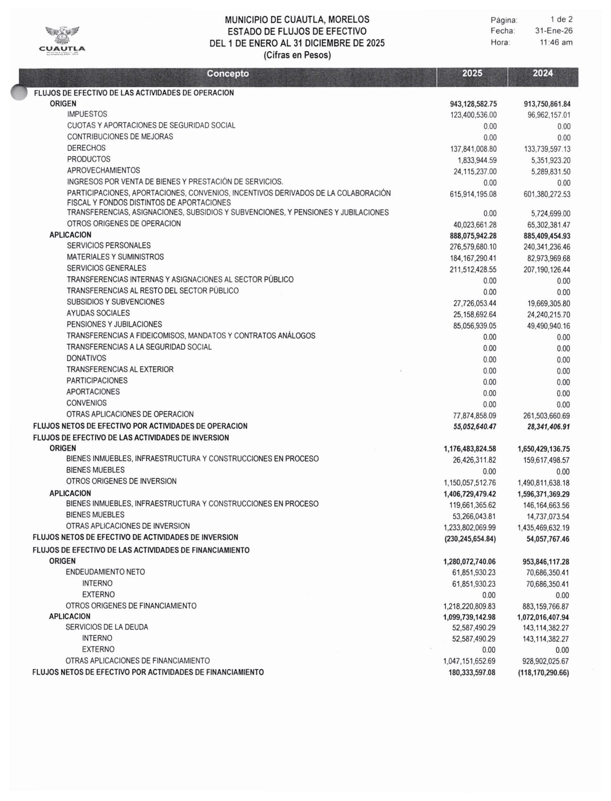
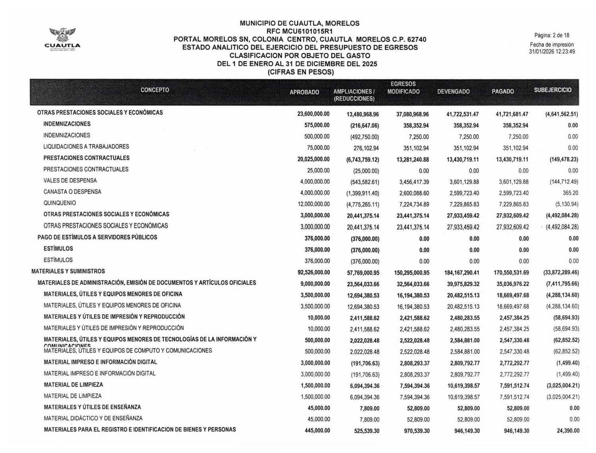
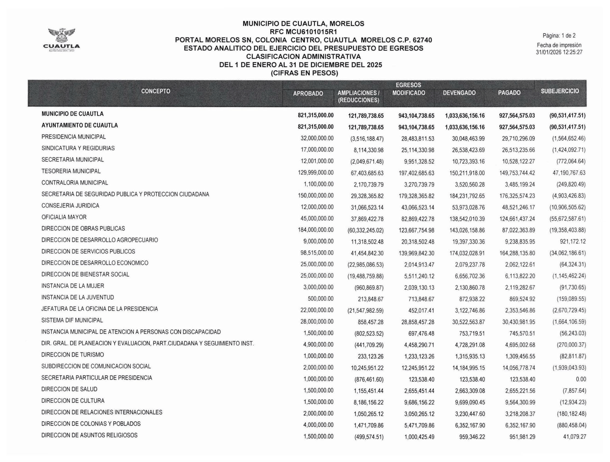
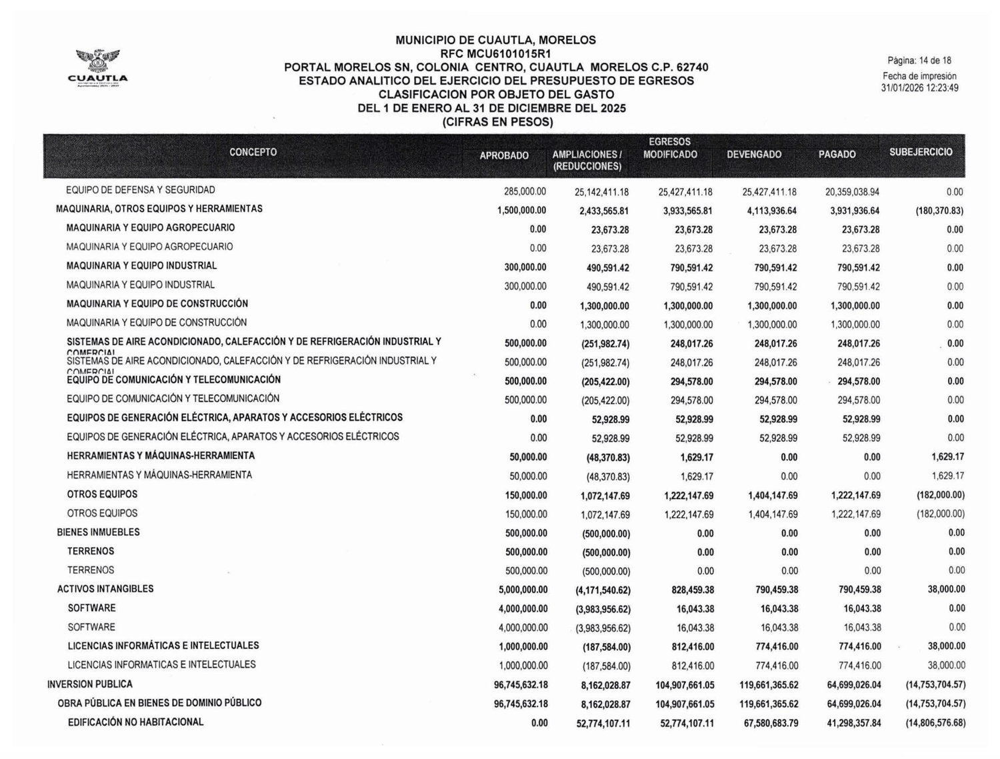
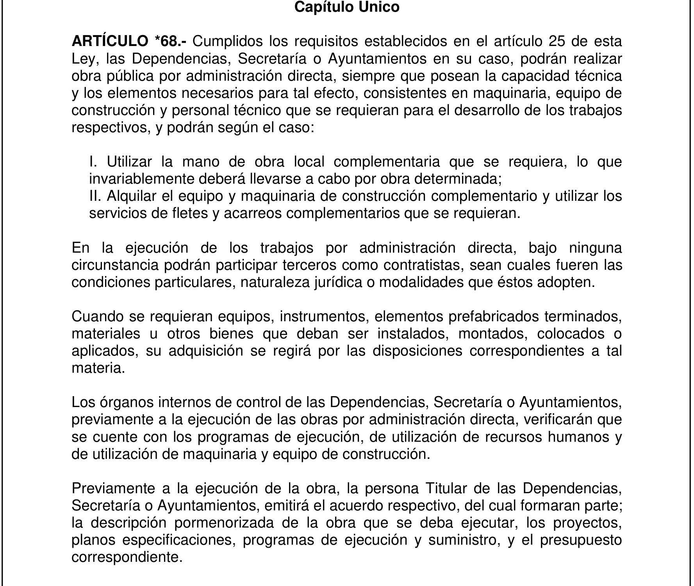
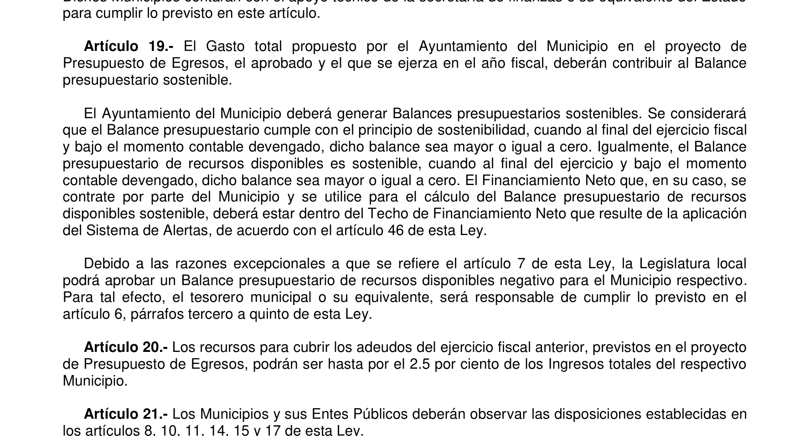
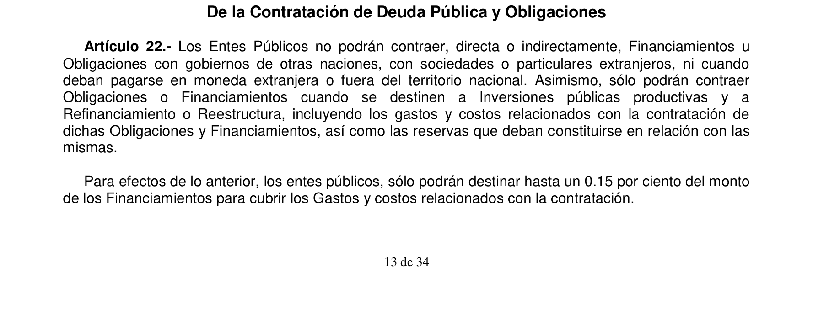
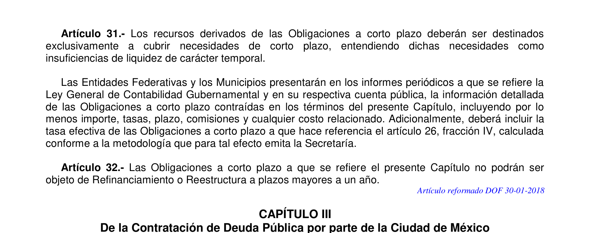

No era solo la basura
La cuenta pública 2025 de Cuautla muestra que el sobrecosto de la basura no fue una excepción. El municipio gastó 184 millones en materiales, más del doble que en 2024 y 99 por ciento arriba de lo autorizado, mientras a Obras Públicas le recortaba 60 millones. Registró 119 millones de obra y pagó 64. Debe 157.7 millones a contratistas y cerró el año con 8.1 millones en caja. Con Schumpeter: la historia fiscal de un pueblo, despojada de toda frase.

Hace unos días publicamos aquí lo de la basura de Cuautla. El municipio presupuestó 5.9 millones de pesos para toda la limpieza y el manejo de desechos, terminó pagando 13.7, y no hay contrato publicado en la Plataforma Nacional de Transparencia, ni en el municipio ni en el estado.
Aquella columna cerró con una pregunta que quedó abierta: si esto ocurrió con la basura, ¿ocurrió con lo demás?
Ya tenemos con qué responder. El municipio publicó su cuenta pública de 2025 con fecha de impresión del 31 de enero de este año, y ahí está todo. La respuesta corta es que no, la basura no fue una excepción. Fue el ejemplo.
El material
En 2024, Cuautla gastó 82 millones 973 mil pesos en materiales y suministros. En 2025 gastó 184 millones 167 mil. Más del doble en un año, en la misma ciudad, con el mismo tamaño.

Y no es que el presupuesto lo previera. Para ese capítulo se autorizaron 92 millones 526 mil pesos. Terminaron en 184. Un 99 por ciento por encima de lo aprobado.
Conviene ver el detalle, porque no fue una compra grande que se pueda explicar sola. Materiales y útiles de oficina pasaron de 3 millones 500 mil autorizados a 20 millones 482 mil ejercidos. Material de limpieza, de un millón y medio a 10 millones 619 mil. Materiales de impresión y reproducción, de 10 mil pesos a 2 millones 480 mil.

Doscientas cuarenta y ocho veces lo autorizado, en impresión.
La obra
Ahora la otra mitad, que es la que da sentido a la primera.
En ese mismo ejercicio, a la Dirección de Obras Públicas le redujeron 60 millones 332 mil pesos de su presupuesto. De los 184 millones que tenía aprobados, su presupuesto modificado quedó en 123.

De lo que sí alcanzó a registrar, 143 millones de obra, pagó únicamente 87.
Y en el capítulo de inversión pública el patrón se repite: 119 millones 661 mil de obra registrada, 64 millones 699 mil efectivamente pagados. Quedan casi 55 millones de obra que aparece en los libros como recibida y que nadie cobró.

La palabra que sostiene todo esto
Aquí hay que detenerse en un término, porque de él depende entender si esto es un retraso administrativo o algo distinto.
En la contabilidad gubernamental, devengado significa que la obra se recibió, se aceptó, y el municipio reconoce que la debe. Pagado significa que el dinero salió. La diferencia entre ambos no es un tecnicismo contable: es deuda con quien construyó.
Los propios estados financieros del municipio la registran. Al 31 de diciembre de 2025, Cuautla tenía 157 millones 721 mil pesos en obligaciones con contratistas de obra pública sin liquidar.
Y hay 10 millones y medio adicionales en anticipos entregados a contratistas que al cierre del ejercicio no habían entregado la obra ni devuelto el dinero.
Lo que había en el banco
La pregunta obvia es dónde está el dinero para pagar todo eso. Si se devengaron 119 millones de obra y se pagaron 64, deberían quedar unos 55 esperando salir.
El Estado de Flujos de Efectivo responde con una sola línea. Efectivo y equivalentes al final del ejercicio, 31 de diciembre de 2025: 8 millones 117 mil pesos.
Ocho millones en caja, contra 157 de deuda con contratistas.
Y el dato que ordena a todos los demás: el municipio devengó 1,033 millones de pesos contra un presupuesto que, ya con todas sus ampliaciones, era de 943 millones. Se pasó por noventa millones y medio de lo que él mismo había autorizado ampliar.
Lo que se puede leer y lo que no
Conviene separar aquí lo que los documentos prueban de lo que solo permiten preguntar, porque no es lo mismo.
Los documentos prueban que se compró el doble de material del autorizado, que a la obra se le quitó dinero, que se registró obra que no se pagó, y que el año cerró con ocho millones en caja. Todo eso está en cifras oficiales firmadas por el propio municipio.
Material, el doble. Obra, la mitad. Pago a quien la hizo, menos todavía. Y ocho millones en la cuenta.
Los documentos no prueban que alguien se haya llevado nada. No pagar no es desviar. Y es honesto decirlo.
Pero sí obligan a una pregunta que el municipio tendría que responder: si la obra estaba recibida y aceptada, y el diagnóstico oficial de su propia Dirección de Obras Públicas reconoce deterioro de infraestructura vial, ¿qué fue exactamente lo que se recibió?
La explicación que no puede ser
Hay una figura legal que cubriría lo del material: la obra por administración directa, donde el municipio compra los insumos y ejecuta con su propia gente en lugar de contratar. Es perfectamente legal y muchos ayuntamientos la usan.
Pero la ley que la regula la cierra por dos lados.
El artículo 68 de la Ley de Obra Pública y Servicios Relacionados con la Misma del Estado de Morelos permite ejecutar por administración directa "siempre que posean la capacidad técnica y los elementos necesarios para tal efecto, consistentes en maquinaria, equipo de construcción y personal técnico". Es decir, hay que tener con qué.
Y el mismo artículo agrega, en una frase que no admite lectura intermedia: "En la ejecución de los trabajos por administración directa, bajo ninguna circunstancia podrán participar terceros como contratistas, sean cuales fueren las condiciones particulares, naturaleza jurídica o modalidades que éstos adopten."

Ahí queda cerrado el círculo. Si Cuautla ejecutó por administración directa, que es lo único que explicaría comprar 184 millones en materiales, entonces no podía haber contratistas. Y sin embargo les debe 157.7 millones a contratistas de obra pública.
Si en cambio la obra fue contratada, que es lo que confirma esa deuda, entonces la compra directa de materiales por el doble de lo autorizado no tiene dónde apoyarse.
Las dos explicaciones son excluyentes. No pueden ser ciertas al mismo tiempo.
Hay un detalle más en ese artículo, y apunta a un área que ya conocemos. Dice que los órganos internos de control, "previamente a la ejecución de las obras por administración directa, verificarán que se cuente con los programas de ejecución, de utilización de recursos humanos y de utilización de maquinaria y equipo de construcción".
El órgano interno de control de Cuautla es la Contraloría Municipal. En 2025 tenía un presupuesto aprobado de 1 millón 100 mil pesos y ejerció 3 millones 520 mil, un 220 por ciento por encima.
Qué se está incumpliendo, artículo por artículo
Conviene dejarlo enumerado, para que quede claro que no se trata de una apreciación editorial sino de obligaciones escritas.
Balance presupuestario. El artículo 19 de la Ley de Disciplina Financiera obliga a los ayuntamientos a generar balances presupuestarios sostenibles, y precisa que la sostenibilidad se mide "al final del ejercicio fiscal y bajo el momento contable devengado". Cuautla devengó 1,033 millones contra un modificado de 943.

Destino del financiamiento. El artículo 22 de la misma ley solo permite contraer obligaciones "cuando se destinen a Inversiones públicas productivas y a Refinanciamiento o Reestructura", y su artículo 2 fracción XXXV define refinanciamiento como pagar financiamientos previos, no adeudos con proveedores.

Obligaciones a corto plazo. El artículo 31 las limita a "insuficiencias de liquidez de carácter temporal".

Obra por administración directa. El artículo 68 de la Ley de Obra Pública estatal, en los términos ya citados.
Ninguno de estos artículos es oscuro ni requiere interpretación. Están publicados, son gratuitos, y la Entidad Superior de Auditoría los aplica todos los días.
Y la pregunta de siempre
La Entidad Superior de Auditoría y Fiscalización del estado, que cuesta 50 millones 400 mil pesos al año, fiscalizó la cuenta pública de Cuautla del ejercicio 2022 y entregó el resultado al Congreso el 17 de diciembre de 2024. La de 2025 todavía no la revisa.
Cuando la revise, esta administración habrá terminado.
Nosotros vimos todo lo anterior abriendo dos documentos que están publicados y son gratuitos.
Schumpeter escribió en 1918 que "el espíritu de un pueblo, su nivel cultural, su estructura social, los hechos que su política pueda preparar, todo eso y más está escrito en su historia fiscal, despojada de toda frase". Y en esas mismas páginas le reconoce a Rudolf Goldscheid el mérito de haberlo dicho antes con una imagen que ya no se olvida: "el presupuesto es el esqueleto del Estado despojado de toda ideología engañosa", un conjunto de hechos duros y desnudos.
Pues este es el esqueleto de Cuautla en 2025. Material, el doble. Obra, la mitad. Pago a quien la hizo, menos todavía. Y ocho millones en la cuenta.
No era la basura. La basura solo fue por dónde se empezó a ver.
Documentos que respaldan cada cifra
Las nueve capturas que acompañan esta columna no son ilustración: son las páginas de donde salió cada cifra. Cinco vienen de la cuenta pública 2025 de Cuautla, con fecha de impresión del 31 de enero de 2026, y cuatro son los artículos de ley que se citan, reproducidos del texto vigente. Cualquier lector puede rehacer el ejercicio completo descargando los mismos documentos del portal del municipio y del marco jurídico del estado, que son públicos y gratuitos.
Antecedente: La cuenta de la basura Ver el expediente →
SRVO
Fuentes y referencias citadas
- Municipio de Cuautla, Estado Analítico del Ejercicio del Presupuesto de Egresos, Cuenta Pública anual 2025, clasificación administrativa y clasificación por objeto del gasto. Fecha de impresión del documento: 31 de enero de 2026. Documento en poder de la redacción.
- Municipio de Cuautla, Estado de Flujos de Efectivo del 1 de enero al 31 de diciembre de 2025.
- Municipio de Cuautla, Notas a los Estados Financieros 2025.
- Presupuesto de Egresos del Gobierno del Estado de Morelos para el ejercicio fiscal 2025, Decreto Número Veinticinco, Anexo 23, asignación de la ESAF.
- Ley de Disciplina Financiera de las Entidades Federativas y los Municipios, artículos 22, 30 y 31.
- 45 Digital Noticias, "La cuenta de la basura", 9 de agosto de 2026.
- Schumpeter, Joseph A., La crisis del Estado fiscal (Die Krise des Steuerstaats, 1918; traducción inglesa The Crisis of the Tax State, International Economic Papers núm. 4, 1954). Cotejado contra el texto: "The spirit of a people, its cultural level, its social structure, the deeds its policy may prepare—all this and more is written in its fiscal history, stripped of all phrases." La frase del esqueleto es de Rudolf Goldscheid, y Schumpeter se la reconoce expresamente: "It is Goldscheid's enduring merit to have been the first to have laid proper stress on this way of looking at fiscal history: to have broadcast the truth that 'the budget is the skeleton of the state stripped of all misleading ideologies'."